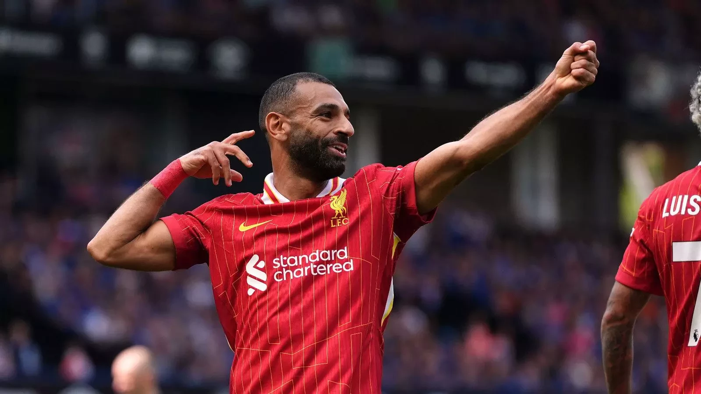
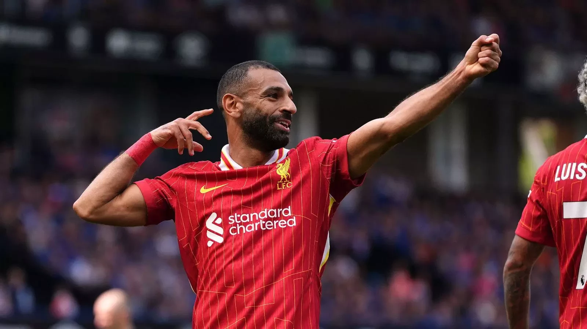

<
Mohammed Salah is an Egyptian professional footballer known for his time as a prolific forward for Liverpool FC and the Egyptian national team. Widely considered one of the greatest wingers of all time, he is celebrat`ed for his speed, dribbling, and goal-scoring ability. His career is marked by numerous accolades, including multiple Premier League Golden Boots, the 2017-18 Premier League Player of the Season award, and a UEFA Champions League title.